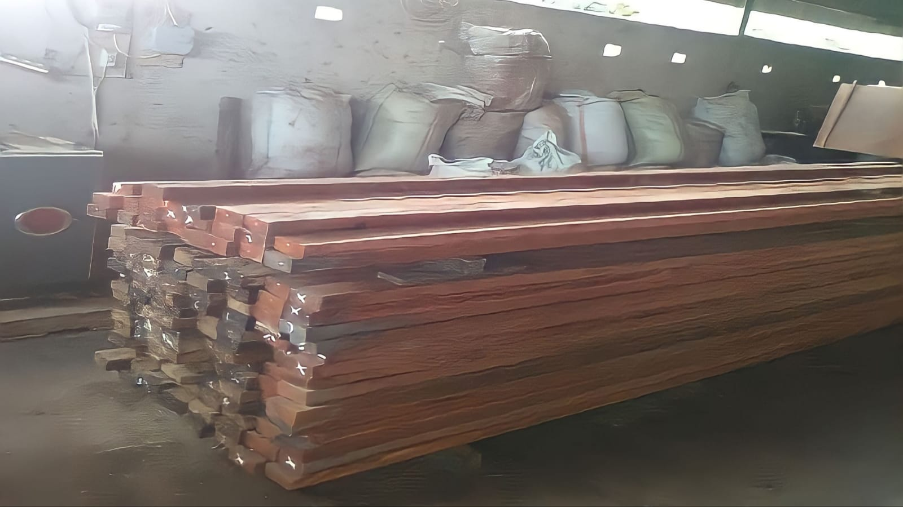
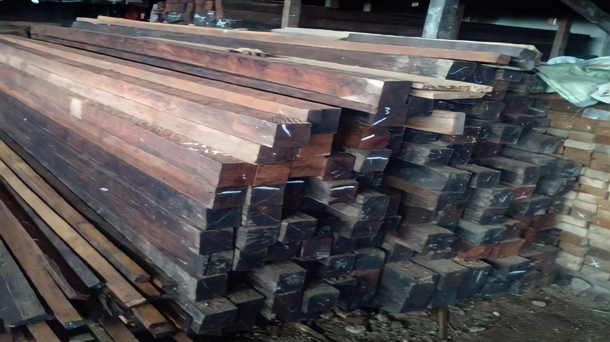
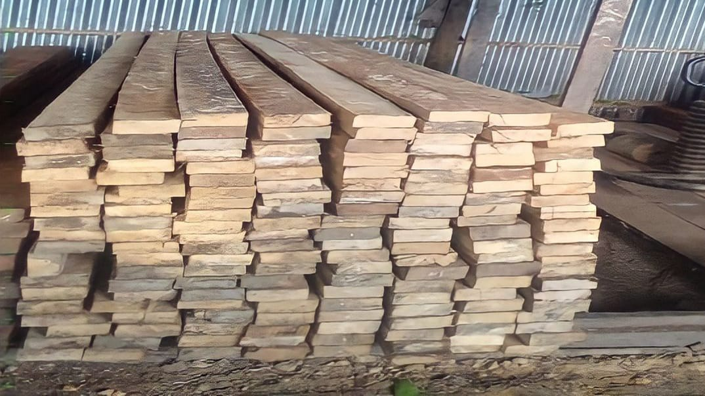

Produk

Kayu Matoa
Produk

Kayu Besi
Produk

TPK Irian Sejahtera mempunyai pemilik yaitu Rian Siahaan, yang bertempat di Jl. Tanjung Rimoni, Kel.Malanu, Distrik. Sorong Utara, Kota Sorong. Di TPK Irian Sejahtera juga terdapat beberapa jenis kayu yang dapat anda beli.
Pohon matoa dapat menghasilkan kayu yang berwana khas. Hal itu terlihat dari bagian gubalnya yang tampil dengan warna lebih muda ketimbang bagian terasnya.
Karakteristik kayu besi yang mudah dikenali adalah teksturnya yang kasar dan keras. Hal itulah yang membuatnya sulit dipotong dan juga dipaku.
Kayu lombo memiliki tekstur yang lunak, sehingga dapat dengan mudah diolah dan saat dipaku. Namun kayu ini tidak sekeras dan tidak sekuat kayu besi.
Copyright 2023 All Right Reserved By.ROPN WoodMaster